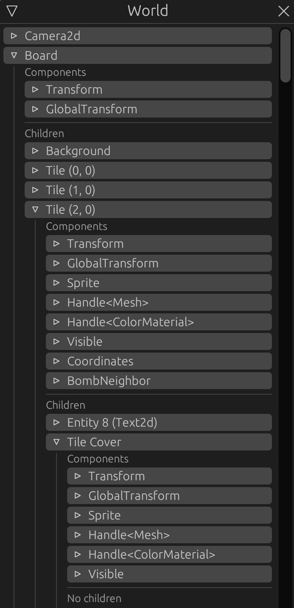
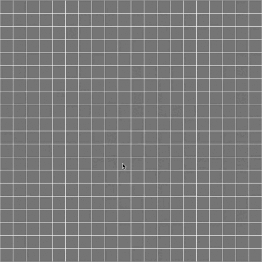

Uncovering Tiles
To cover our tiles we will simply add a child entity for each tile with a sprite, hiding what's below.
We will use the Uncover component set up in part 4 for uncovering.
Board resource
To uncover the tiles we will need to store references to each covering entity, let's edit our Board resource:
#![allow(unused)] fn main() { // board.rs use bevy::utils::HashMap; #[derive(Debug)] pub struct Board { // .. pub covered_tiles: HashMap<Coordinates, Entity>, } impl Board { // .. /// Retrieves a covered tile entity pub fn tile_to_uncover(&self, coords: &Coordinates) -> Option<&Entity> { self.covered_tiles.get(coords) } /// We try to uncover a tile, returning the entity pub fn try_uncover_tile(&mut self, coords: &Coordinates) -> Option<Entity> { self.covered_tiles.remove(coords) } /// We retrieve the adjacent covered tile entities of `coord` pub fn adjacent_covered_tiles(&self, coord: Coordinates) -> Vec<Entity> { self.tile_map .safe_square_at(coord) .filter_map(|c| self.covered_tiles.get(&c)) .copied() .collect() } } }
Instead of making some complex new tile map we will use a HashMap containing the entities. Entity being a simple identifier implements Copy and Clone, so can be duplicated and stored safely.
Every time we uncover a tile we will remove the entity from our map.
We provide three methods:
tile_to_uncoverto retrieve a covered tile entity at some tile coordinatestry_uncover_tilewhich removes the entity from the map if a covered tile entity exists at the given coordinatesadjacent_covered_tileswhich allows to retrieve all covered tile in a square around some coordinates.
Tile cover
We edit our spawn_tiles function to add the following arguments:
#![allow(unused)] fn main() { // lib.rs use bevy::utils::HashMap; // .. fn spawn_tiles( // .. covered_tile_color: Color, covered_tiles: &mut HashMap<Coordinates, Entity>, ) // .. }
and we can add the tile cover creation for every tile:
#![allow(unused)] fn main() { // lib.rs // .. // .insert(coordinates); // We add the cover sprites cmd.with_children(|parent| { let entity = parent .spawn_bundle(SpriteBundle { sprite: Sprite { custom_size: Some(Vec2::splat(size - padding)), color: covered_tile_color, ..Default::default() }, transform: Transform::from_xyz(0., 0., 2.), ..Default::default() }) .insert(Name::new("Tile Cover")) .id(); covered_tiles.insert(coordinates, entity); }); // match tile { //.. }
Let's edit our setup_board system accordingly:
#![allow(unused)] fn main() { // lib.rs use bevy::utils::{AHashExt, HashMap}; // .. let mut covered_tiles = HashMap::with_capacity((tile_map.width() * tile_map.height()).into()); // .. Self::spawn_tiles( //.. Color::DARK_GRAY, &mut covered_tiles ); // .. commands.insert_resource(Board { //.. covered_tiles, }) // .. }
Now, each board tile will have a child "Tile Cover" entity with a sprite hiding it.

Events
As shown in the previous part we want to send an event when a tile is clicked. an event is like a resource but available for 1 frame. (see more about events)
Let's create an events.rs module for our board_plugin
#![allow(unused)] fn main() { // board_plugin/src/events.rs use crate::components::Coordinates; #[derive(Debug, Copy, Clone)] pub struct TileTriggerEvent(pub Coordinates); }
#![allow(unused)] fn main() { // board_plugin/src/lib.rs mod events; }
Just like components and resources, events can be any rust type. Here we choose to have an event containing the board coordinates of the tile to uncover.
Systems
Input
Let's edit our input_handling system and send our new event for a left click:
// input.rs
+ use crate::events::TileTriggerEvent;
pub fn input_handling(
// ..
+ mut tile_trigger_ewr: EventWriter<TileTriggerEvent>,
) {
// ..
// log::info!("Trying to uncover tile on {}", coordinates);
- // TODO: generate an event
+ tile_trigger_ewr.send(TileTriggerEvent(coordinates));
// ..
}
We add a new argument, an EventWriter for our new event, and replace our TODO with the sending code.
Now every time we use our left mouse button on the board, a TileTriggerEvent is sent.
Uncover
Trigger event handler
We can now create a system listening to our new event. Let's create an uncover.rs file in our systems module:
#![allow(unused)] fn main() { // systems/mod.rs pub mod uncover; }
#![allow(unused)] fn main() { // systems/uncover.rs use bevy::prelude::*; use crate::{Board, Bomb, BombNeighbor, Coordinates, Uncover}; use crate::events::TileTriggerEvent; pub fn trigger_event_handler( mut commands: Commands, board: Res<Board>, mut tile_trigger_evr: EventReader<TileTriggerEvent>, ) { for trigger_event in tile_trigger_evr.iter() { if let Some(entity) = board.tile_to_uncover(&trigger_event.0) { commands.entity(*entity).insert(Uncover); } } } }
Like our input system we iterate through TileTriggerEvent events.
For each of these events we check if the tile is covered, and if it is we add an Uncover component to it.
Uncover tiles
Now let's make an other system using this Uncover component:
#![allow(unused)] fn main() { // uncover.rs pub fn uncover_tiles( mut commands: Commands, mut board: ResMut<Board>, children: Query<(Entity, &Parent), With<Uncover>>, parents: Query<(&Coordinates, Option<&Bomb>, Option<&BombNeighbor>)>, ) { } }
Our first query !
The arguments:
commands, as usual for entity manipulationboardourBoardresource but with mutable access (ResMut)Query<(Entity, &Parent), With<Uncover>>: We query bothEntityandParentfor every entity having anUncovercomponent.Query<(&Coordinates, Option<&Bomb>, Option<&BombNeighbor>)>: We query everyCoordinatecomponent and maybeBombandBombNeighborcomponents.
There are two ways to get data from queries, to iterate through it or to get the queried components from a specified entity. (see more about queries)
Let's iterate through the children query:
#![allow(unused)] fn main() { // uncover.rs // .. // We iterate through tile covers to uncover for (entity, parent) in children.iter() { // we destroy the tile cover entity commands .entity(entity) .despawn_recursive(); } }
We get every Entity of tile covers and the Parent (parent entity) from the query.
We retrieve the tile cover entity commands from Commands and we destroy the entity
Why
despawn_recursive?
This method will also despawn potential child entities and will unlink the tile cover from the board tile entity.
Okay, we destroy the triggered tile cover, but we need to check wich board tile was actually triggered, and get its coordinates. Let's get the parent components from the second query:
#![allow(unused)] fn main() { // uncover.rs use bevy::log; // .. let (coords, bomb, bomb_counter) = match parents.get(parent.0) { Ok(v) => v, Err(e) => { log::error!("{}", e); continue; } }; }
We now have the board tile (the tile cover parent) Coordinates component and two Option<> for their potential Bomb and BombNeighbor components.
Let's complete our function:
#![allow(unused)] fn main() { // uncover.rs // .. // We remove the entity from the board covered tile map match board.try_uncover_tile(coords) { None => log::debug!("Tried to uncover an already uncovered tile"), Some(e) => log::debug!("Uncovered tile {} (entity: {:?})", coords, e), } if bomb.is_some() { log::info!("Boom !"); // TODO: Add explosion event } // If the tile is empty.. else if bomb_counter.is_none() { // .. We propagate the uncovering by adding the `Uncover` component to adjacent tiles // which will then be removed next frame for entity in board.adjacent_covered_tiles(*coords) { commands.entity(entity).insert(Uncover); } } }
Since we despawn the triggered cover tile entity, we need to remove it from our Board calling try_uncover_tile.
We also check if the board tile is a bomb and log Boom !.
The final part will insert a new Uncover component to adjacent tile covers if the parent board tile is neither a bomb nor a bomb neighbor.
This operation will propagate the uncovering process to the adjacent cover tiles for the next frame.
This is not necessarily optimal, but it delays computations.
All that is left is to register our new systems and our event to our App in BoardPlugin
#![allow(unused)] fn main() { // lib.rs use crate::events::*; // .. // .add_system(systems::input::input_handling) .add_system(systems::uncover::trigger_event_handler) .add_system(systems::uncover::uncover_tiles) .add_event::<TileTriggerEvent>(); //.. }
Let's run our app !

Author: Félix de Maneville Follow me on Twitter